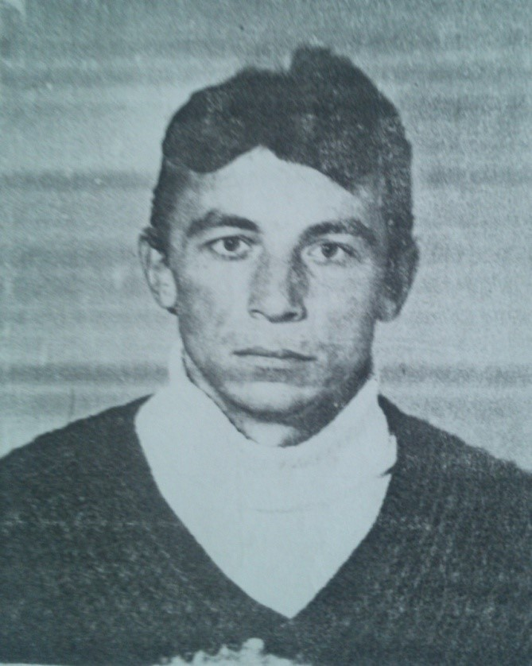
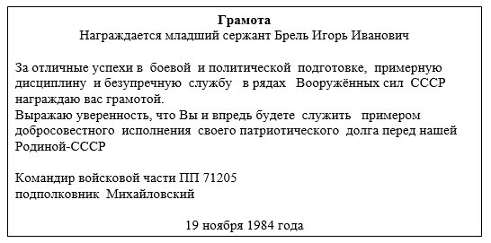
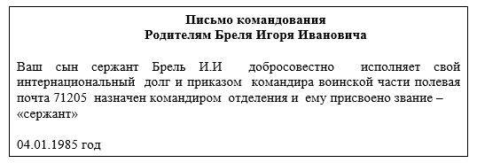
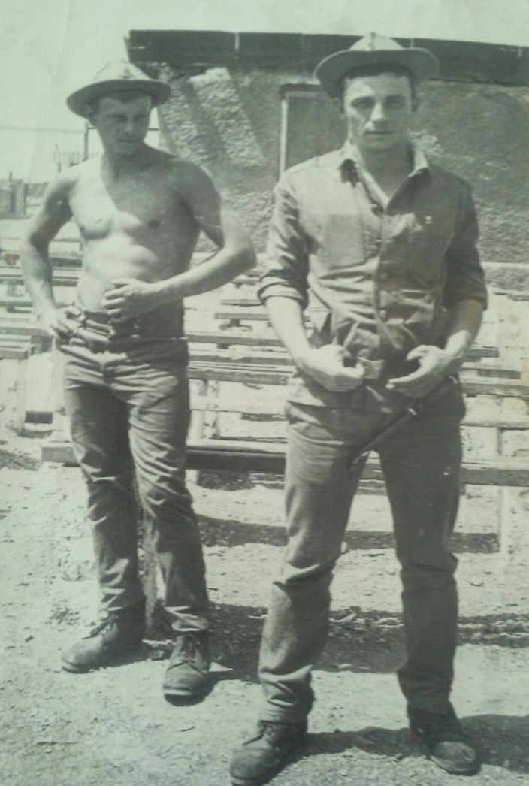
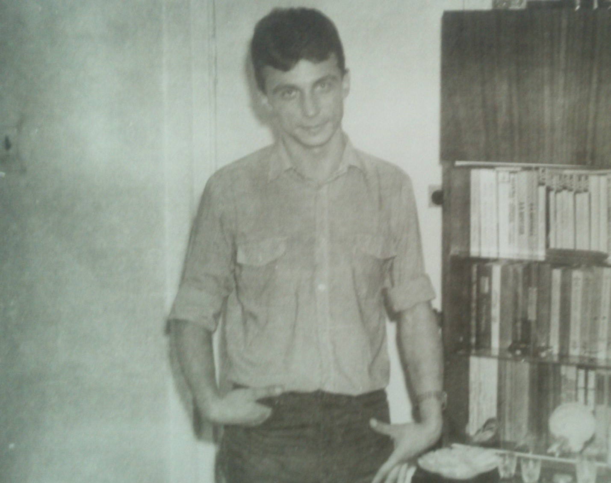

Брель Игорь Иванович
Тот, кто побывал в Афганистане,
Легкого пути искать не будет,
Под тяжелой ношей смелым станет,
Не оставит Вас в беде любой.
Родился в г.Гомеле 28.10.1963г. Окончил школу в 1981г., получив тем самым среднее образование. С ноября 1982г. по февраль 1985г. служил в Афганистане, в артиллерийских войсках, Награжден медалью «70 лет вооруженных сил СССР» и медалью «От благородного афганского народа».
  Самый памятный день из слов Игоря Ивановича:
«Это день, когда я демобилизовался из армии 2 февраля 1985 года. Летел я буквально на крыльях лайнера ТУ-154 счастливый, что остался жив. Что два с половиной года войны позади. Такого чувства я не испытывал больше никогда».
Наконец я дома